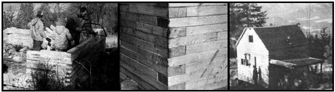

PHOTOS FROM LEFT. Three of the Cummings family rush to get their house up before %inter sets in, a detail of one corner of the building, the completed first section of the home and a view of the structure's interior.